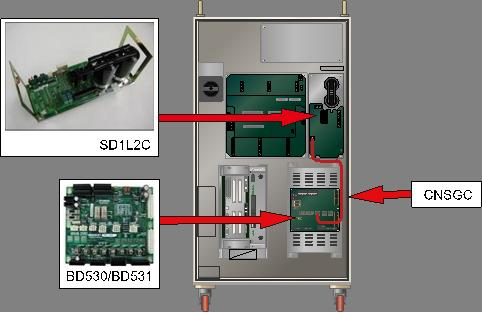
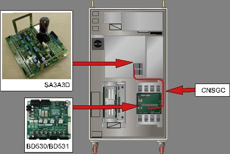
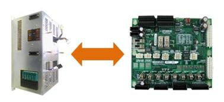

1.1.7.1. 개요
모터를 구동하는 서보 구동장치의 직류 전압(P-N)이 저전압 설정치를 이하로 측정되었습니다.
1.1.7.2. 원인 및 점검방법
|
<모터 오프 상태에서도 발생하는 경우> (1) 저전압 에러 검지 관련 부품을 점검하여 주십시오. n CNSGC 케이블을 교체한 후 점검하여 주십시오. n BD530/BD531 보드를 교체한 후 점검하여 주십시오. n 서보 구동장치를 교체한 후 점검하여 주십시오.
< 모터 On 하는 순간에 발생하는 경우> (2) 전원 관련 부품을 점검하십시오. n 서보 구동장치를 교체한 후 점검하여 주십시오. n 제어기 내부 3상 전압을 점검하여 주십시오. n 제어기 입력 3상 전압을 점검하여 주십시오.
<로봇의 재생 속도에 따라 특정 스텝에서 발생하는 경우> (3) 로봇의 재생 속도를 변경하여 에러를 확인하여 주십시오. n 로봇의 재생 속도를 낮추어 에러를 확인하여 주십시오. n 로봇 동작 시 제어기 입력 3상 전압을 점검하여 주십시오. n 입력 전압이 220V아닌 경우 내부 3상 전압을 점검하여 주십시오. |
(1) 저전압 에러 검지 관련 부품을 점검하여 주십시오.
AMP의 저전압 발생 에러는 서보 구동장치에 공급되는 직류 전원 전압(P-N)이 설정값에 미달하는 경우에 서보 구동장치에서 검지합니다. 발생된 에러는 CNSGC 케이블을 통하여 BD530/BD531보드에서 소프트웨어로 처리합니다.

(a) Hi5-N00 제어기

(b) Hi5-N30 제어기
그림 1.35 저전압 발생 에러 관련 부품 배치
n CNSGC 케이블의 교체 점검
CNSGC 케이블을 정상품과 교체하여 에러가 발생하지 않으면 케이블의 접속 불량입니다. CNSGC 케이블을 정상품으로 교체하여 사용하시기 바랍니다.
n BD530/BD531의 교체 점검
BD530/BD531을 정상품과 교체하여 에러가 발생하지 않으면 해당 보드의 불량입니다. BD530/BD531을 정상품으로 교체하여 사용하시기 바랍니다.

그림 1.36 BD530/BD531의 교체
n 서보 구동장치의 교체 점검
AMP의 저전압 에러를 검지하는 모듈은 다음과 같습니다.
Ø Hi5-N제어기 : 중형용 SD1L2C, 소형용 SA3A3D
현재 사용 중인 제어기의 구성품을 확인하신 후 점검하시기 바랍니다. 정상품과 교체하여 에러 재발 여부를 확인하여 주십시오.
그림 1.37 저전압 발생시 모듈교체
(2) 전원 관련 부품을 점검하여 주십시오.
AMP의 저전압 발생 에러는 서보 구동장치에 입력되는 3상 AC 220V가 허용 범위를 벗어나는 경우에 발생됩니다. 또는 회생방전 제어 회로의 이상으로 인하여 모터 On 시 회생방전을 하는 경우에 발생합니다.
n 서보 구동장치의 교체 점검
AMP의 과전압 에러를 검지하는 모듈을 교체하여 에러 재발 여부를 확인하여 주십시오 모듈 내부의 회로의 고장으로 인하여 에러가 지속적으로 발생할 수 있습니다.
Ø Hi5-N제어기
l 중형 로봇용 다이오드 모듈 : SD1L2C
l 소형 로봇용 서보 구동장치 : SA3A3D
n 3상 전압 점검
AMP의 저전압 에러는 약 DC 142V(또는 210V)에서 시작합니다. AC 100V(또는 148V) 이하의 전압이 서보 구동장치에 입력되는 상태에서 모터 On 하면 저전압 에러가 발생할 수 있습니다. 입력전압이 허용 범위를 벗어나는 경우에는 제어기 입력 3상 전압 점검 절차와 제어기 내부 3상 전압 점검 절차에 따라 전압을 점검하시기 바랍니다.
Ø 서보 구동장치 입력 전압 사양: 3상 AC 220V
Ø 모터 On 시 허용 범위: AC 198V ~ 242V
(3) 로봇의 재생 속도에 따른 에러 발생을 점검하여 주십시오.
AMP의 저전압 발생 에러는 입력 전원 용량의 부족이나 로봇이 급격한 가속을 하는 경우에 발생합니다. 로봇의 재생 속도에 따른 에러의 발생 여부와 서보 구동장치에 입력되는 3상 전압의 변동을 확인하여 주십시오.
n 로봇 재생 속도의 변경
로봇 동작에 의한 순간 전력이 제어기 설계 사양을 초과하는 경우에 저전압 에러가 발생할 수 있습니다. 에러가 발생하는 스텝의 속도를 낮추어 동작시킨 후 에러의 발생 여부를 확인하여 주시기 바랍니다. 속도가 낮은 상태에서 에러가 발생하지 않으면 스텝 속도를 변경하여 사용하시기 바랍니다.
n 에러 발생 스텝에서 3상 전압 점검
AMP의 저전압 에러는 약 DC 142V(또는 210V)에서 시작합니다. 에러가 발생하는 스텝에서 3상 전압이AC 100V(또는 148V) 이하로 서보 구동장치에 입력되는 경우에는 저전압 에러가 발생할 수 있습니다. 입력 전압이 허용 범위를 벗어나는 경우에는 제어기 입력 3상 전압 점검 절차와 제어기 내부 3상 전압 점검 절차에 따라 전압을 점검하시기 바랍니다.
Ø 서보 구동장치 입력 전압 사양: 3상 AC 220V
Ø 모터 On 시 허용 범위: AC 198V ~ 242V